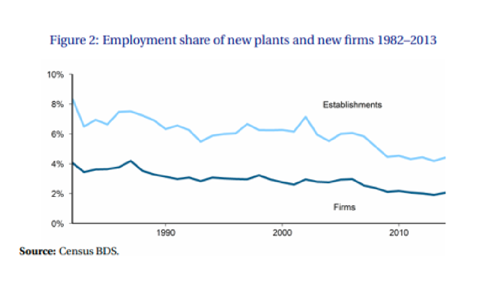
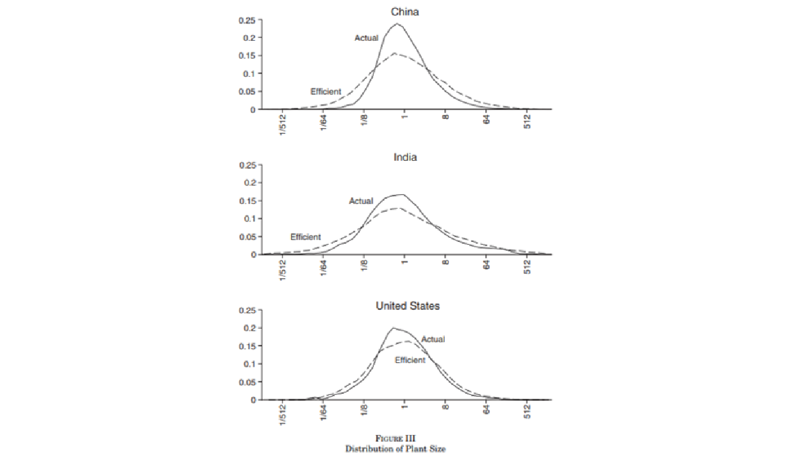
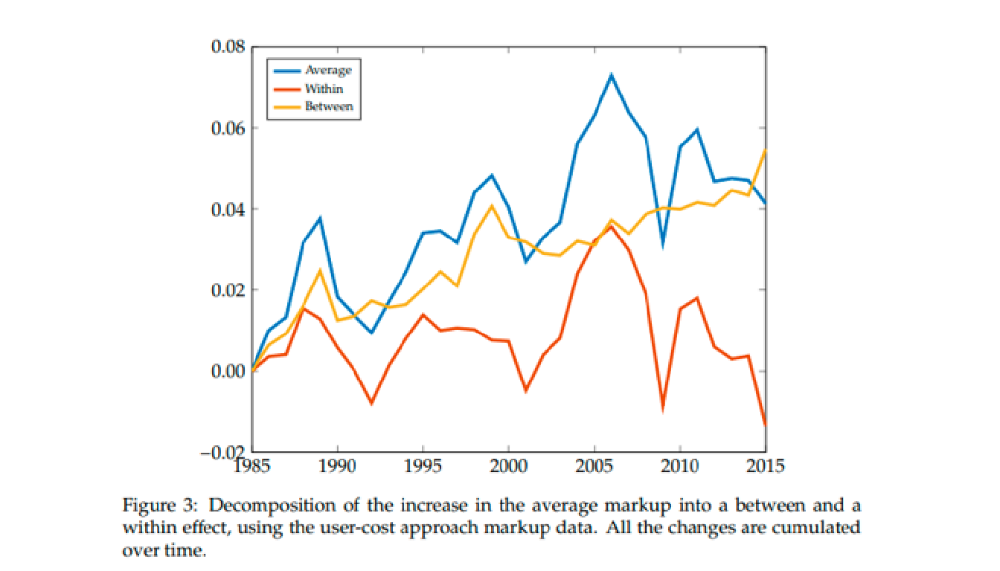
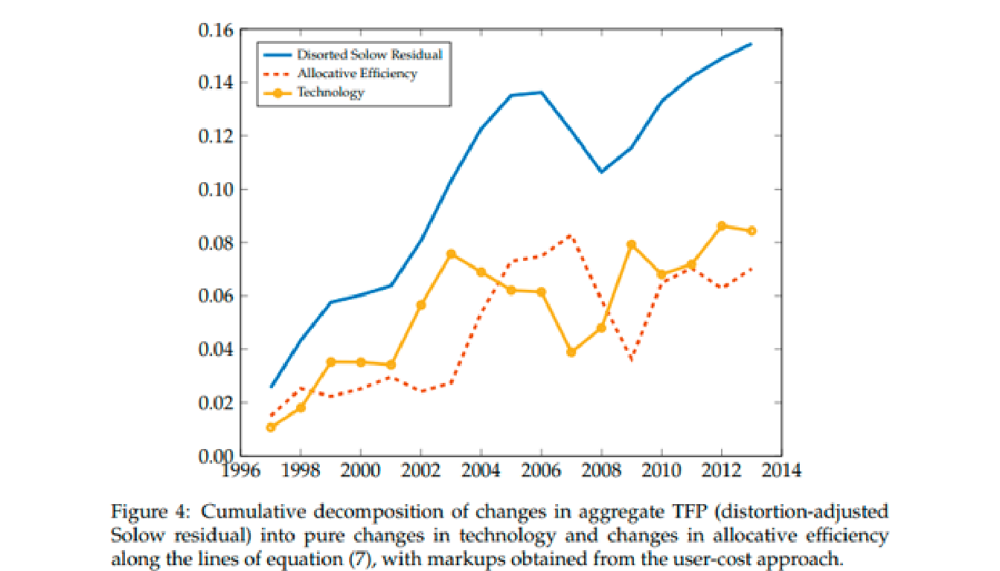
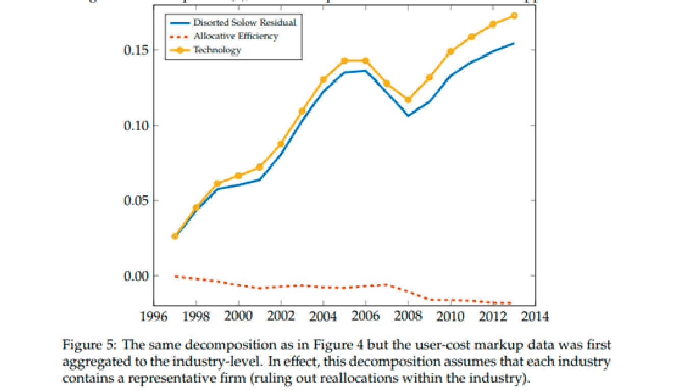
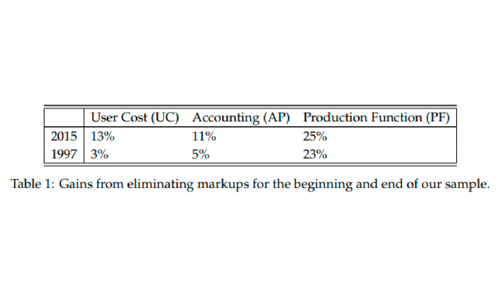
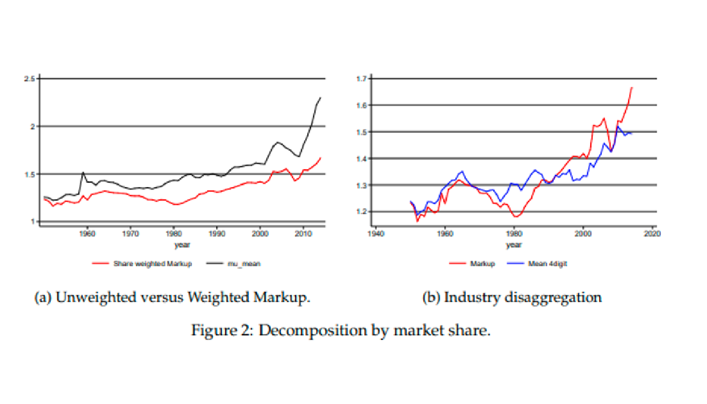
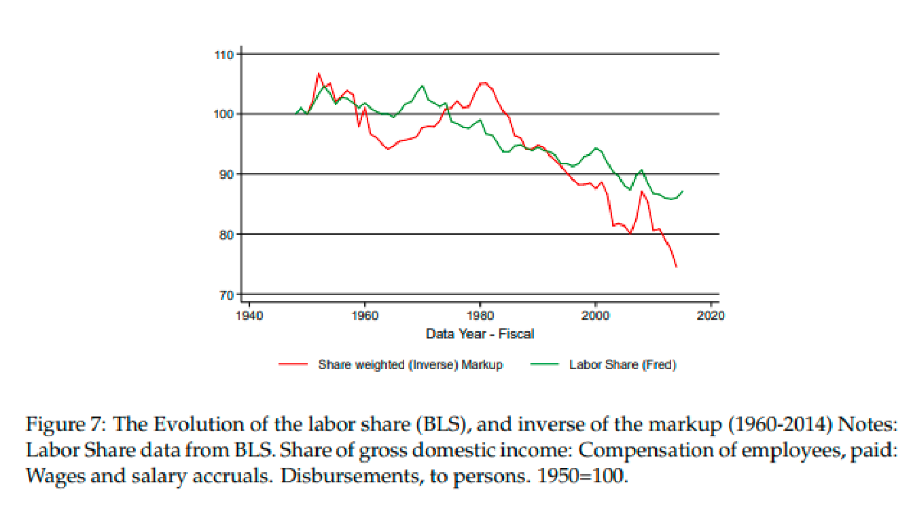
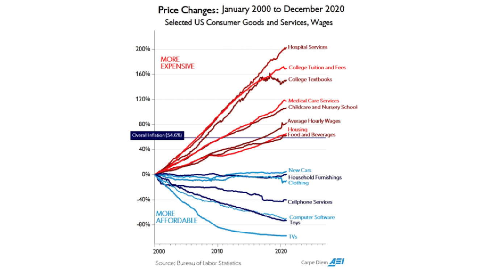
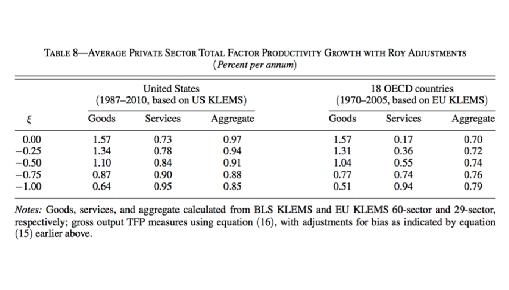

Crecimiento Económico. Transformación sectorial y crecimiento
Implicaciones sectoriales del cambio tecnológico
“Innovative Growth Accounting” (Klenow, Li, 2021)
Durante el curso hemos analizado la evolución de las siguientes tendencias:
La desaceleración en el crecimiento medido de la productividad, particularmente en los últimos años, pero en general desde el 2000.

- La participación de la mano de obra en el PIB ha tenido una tendencia a la baja en los últimos 30 años.

Propiedad de invarianza del Residuo de Solow
Invariance properties of Solow’s productivity residual (Hall, 1989)
Esta disminución de la participación laboral se relaciona con el aumento de las ganancias que obtienen las empresas con mayor poder de mercado (“The Future of Work: Why Wages Aren’t Keeping Up”: Solow).
Estas dos tendencias se vinculan a través de la forma en que se mide el crecimiento de la productividad.
Una participación laboral decreciente puede modificar el residuo de productividad calculado con participaciones del ingreso, aun manteniendo fija la innovación. La dirección depende del crecimiento de los insumos y de los demás supuestos.
La razón es que, si las empresas tienen un poder de mercado cada vez mayor, entonces están utilizando los insumos de manera menos eficiente desde una perspectiva agregada, y la medida de la productividad en la contabilidad del crecimiento refleja la eficiencia con la que las empresas usan esos insumos.
Por lo tanto, un mayor poder de mercado, influyendo en la disminución de la participación laboral afectará en la medición del crecimiento de la productividad.
La productividad medida está influenciada mecánicamente por la cantidad de trabajo y capital que utilizamos.
La función de producción del PIB utiliza insumos de forma distinta a como se incorpora en la fórmula de contabilidad de crecimiento para obtener la productividad.
La baja participación del trabajo implica que la contabilidad del crecimiento subestima el papel del trabajo en la producción, por lo que se sobreestima el rol del capital, atribuyendo erróneamente algo del crecimiento de la productividad a la acumulación de capital y, por lo tanto, el crecimiento medido de la productividad es menor.
En la contabilidad convencional, \(g_{A}^{med}=g_Y-(1-s_L)g_K-s_Lg_L\). Manteniendo fijas las tasas de crecimiento de producto e insumos, \(\partial g_{A}^{med}/\partial s_L=g_K-g_L\). Por ello, si \(g_K>g_L\), una menor participación laboral reduce ese residuo. Esta comparación mecánica no determina el efecto total de una reforma ni equivale a un cambio tecnológico.
Conclusiones:
No se puede sacar conclusiones definitivas sobre lo que está sucediendo con la verdadera innovación o el crecimiento de la productividad sólo observando el crecimiento medido de la productividad.
No se puede inferir que las innovaciones recientes sean menos útiles o productivas que las anteriores, simplemente porque el residuo está cayendo. Puede ser que las políticas y normas que transfieren una parte del PIB del trabajo a las ganancias también estén reduciendo la tasa de crecimiento de la productividad medida.
También es posible que la economía reducir la participación en las ganancias del PIB, a través de impuestos o regulaciones y aún así ver el aumento de la productividad medida cuando disminuye el margen de beneficio.
Mala asignación de los factores de producción
“Misallocation and Manufacturing TFP in China and India ” (Hsieh, Klenow; 2009)
Otros factores que pueden afectar a la productividad se dan cuando hay diferencias en el poder de mercado (y, por lo tanto, en las ganancias) entre los sectores, entonces la participación de un sector en el PIB ya no es igual a su participación en los costos.
Consideren que el crecimiento de la productividad está descompuesto en dos fuentes:
La fuente de crecimiento “dentro” (within) de la productividad: a medida que cada empresa individual se vuelve más eficiente.
La fuente de crecimiento “entre” (between) la productividad: cuando cambiamos los factores de producción de empresas de baja productividad a empresas de alta productividad.
La pregunta interesante en el contexto de empresas con poder de mercado es ¿cuánto potencial existe en la fuente de crecimiento “entre” la productividad?
Es decir, ¿cuánto mayor sería la productividad si pudiera reordenar los factores de producción hasta que el producto de ingreso marginal fuera igual en todas las empresas?
Hsieh y Klenow proporcionan evidencia cuantitativa de la mala asignación de recursos en la productividad agregada en India y China.
Estiman cuánto podría aumentar la producción manufacturera agregada en China e India si el capital y la mano de obra se reasignaran para igualar los productos marginales dentro de cada sector en la medida observada en los Estados Unidos.
Utilizan a Estados Unidos como punto de referencia para desestimar errores de medición y factores omitidos del modelo (como los costos de ajuste y variación del margen).
¿Cuáles son los factores que causan una mala asignación?
Regulaciones del mercado laboral que elevan el costo de la mano de obra. Conexiones políticas y acceso a crédito subsidiado

Conclusiones: La productividad de los ingresos (la relación entre entre el ingreso y cada factor de producción) debe equipararse entre las empresas en ausencia de distorsiones.
Pasar a la eficiencia estadounidense aumentaría la productividad entre un 30 y un 50% en China y entre un 40 y un 60% en la India.

Las ganancias de producción serían el doble si el capital se acumula en respuesta a las ganancias de la productividad agregada.
Tanto en India como en China, las plantas más grandes dentro de las industrias parecen tener productos marginales más altos.
El patrón es mucho más débil en Estados Unidos.
Políticas públicas:
Hay mucho potencial de investigación en esta área:
La sofisticación del sector financiero para mejorar las asignaciones: una posibilidad es que las empresas de alta productividad deseen expandirse, pero su capacidad para hacerlo está limitada por la imposibilidad de encontrar financiamiento.
Análisis regulatorio: los efectos de los costos de entrada, de salida y reglas que dependen del tamaño de las empresas. Entre estos, la medición del impacto de reformas particulares en crecimiento “dentro” (within) de la productividad.
Si la reforma reduce los costos de transacción, o elimina empresas monopólicas estatales entonces el margen para el crecimiento “entre” (between) la productividad debería disminuir con el tiempo a medida que la economía se vuelve más eficiente y las brechas se reducen.
“Productivity and misallocation in general equilibrium” (Baqaee, Farhi; 2017)
Baquee y Farhi construyen una medida de la productividad total de los factores agregada dando resultados para economías con producción neoclásica y distorsiones generadas por “markups” y “wedges”.
Descomponen los cambios de la productividad total de los factores en dos efectos:
El cambio tecnológico puro (exógeno): Dada una distribución inicial de recursos, si el productor aumenta su producción, entonces aumenta la productividad total de los factores.
El cambio en la eficiencia por las asignaciones (endógeno): La distribución de los recursos entre productores cambia como respuesta de un choque, esto aumenta la producción de algunos y reduce la de otros.
Estos autores afirman que es posible romper con los supuestos estrictos de la función Cobb-Douglas y la regla empírica “alfa es igual a un tercio” permitiendo lo siguiente:
Diferentes unidades con diferentes estructuras de costos: no es necesario suponer que todas las industrias tienen una fórmula Cobb-Douglas similar, o que es Cobb-Douglas en absoluto.
Relaciones insumo-producto: Estas industrias pueden ser proveedoras unas de otras y el impacto del incremento de capital en una industria puede tener efectos en otras industrias.
Markups: Cada industria puede estar cobrando un margen de beneficio sobre los costos.
Para ello, proponen un residuo de Solow modificado que pondera el crecimiento de los factores de acuerdo con el cambio en la eficiencia por las asignaciones:

Con base en las fuentes de crecimiento para la productividad total de los factores y el residuo de Solow modificado, realizaron un análisis para la economía de Estados Unidos en el periodo 1997-2015.
Descomposición del incremento promedio en el markup en la red de producción (between) y en los sectores de la producción (within).

- Descomposición del residuo de Solow modificado en efecto tecnológico puro y cambios en asignaciones eficientes.

- ¿Cuánto de esto se debe a cambios en los markups?

Descomposición del residuo de Solow modificado en efecto tecnológico puro y cambios en asignaciones eficientes a nivel industria.
Esta descomposición asume que cada industria tiene una empresa representativa. (Sin tomar en cuenta reasignaciones al interior de la industria)



“The Rise of Market Power and the Macroeconomic Implications” (Loecker, Eeckhout, Unger (LEU), 2018)
Los autores documentan la evolución del markup sobre el costo marginal cobrado basados en datos a nivel de empresa para la economía de Estados Unidos desde 1955.

- Además de aumentar la cola superior de la distribución de los markups no ponderados, hay una reasignación de la cuota de mercado de empresas en industrias chicas a empresas en industrias grandes.

- El aumento es impulsado principalmente por la parte superior de la distribución de las empresas con mayores markups: los percentiles superiores han aumentado considerablemente, mientras que la mediana no ha cambiado.

- Consecuencia: Caída en la participación del trabajo en la economía

- Consecuencia: Caída en la participación del capital en la economía

- Consecuencia: Disminución en la fuerza laboral

Enfermedad de Baumol
- El precio de los servicios ha aumentado mientras que el precio de los bienes ha disminuido. ¿Por qué?

“Performing Arts, The Economic Dilemma: a study of problems common to theater, opera, music, and dance” (Baumol, 1966)
Debido a que los bienes y servicios son complementarios (complementos perfectos en el extremo), eventualmente la productividad estará determinada por el sector de crecimiento más lento (servicios).
Supuestos: 2 sectores: Manufactura y servicios.
La producción de bienes se puede acelerar mientras que el otorgamiento de los servicios es relativamente lento.
La fuerza laboral móvil entre los dos sectores hace que los costos laborales de los sectores cambian en la misma dirección.
El crecimiento de la productividad en el sector de bienes aumenta el salario en ese sector, pero también aumenta la producción de ese sector.
Por lo tanto, la relación entre el salario y la producción se mantiene constante a lo largo del tiempo. Los salarios más altos en el sector de bienes ejercen presión sobre los salarios en el sector de servicios, por lo que los salarios aumentan con el tiempo allí.
Baumol analiza las implicaciones de la demanda de servicios en la economía agregada:
“Si la productividad por hora hombre aumenta de forma acumulativa en un sector en relación con su tasa de crecimiento en otras partes de la economía, mientras que los salarios aumentan proporcionalmente en todas las áreas, los costos relativos en los sectores no progresivos inevitablemente aumentarán, y estos costos aumentarán de forma acumulativa y sin límite … Por lo tanto, el progreso de los sectores tecnológicamente progresivos aumenta inevitablemente los costos de los sectores tecnológicamente invariables de la economía, a menos que de alguna manera los mercados laborales en estas áreas puedan cerrarse y los salarios se mantengan absolutamente constantes, una posibilidad muy poco probable.
Vemos entonces que los costos en muchos sectores de la economía aumentarán implacablemente, y lo harán por razones que están, para todos los fines prácticos, más allá del control de los involucrados … Si se mantienen sus productos relativos, una proporción cada vez mayor de la fuerza laboral debe canalizarse hacia estas actividades y la tasa de crecimiento de la economía debe reducirse de manera correspondiente.”
“Structural Transformation, the Mismeasurement of Productivity Growth, and the Cost Disease of Services” (Young; AER, 2014)
Young trata de explicar por qué el crecimiento de la productividad tiende a disminuir durante una transformación estructural de la producción de bienes a servicios.
La idea es que los servicios tienen un bajo crecimiento de productividad inherente en comparación con la producción de bienes:
Se prestan en unidades fijas de tiempo
Son altamente elásticos en cuanto a los ingresos (demandan más a medida de que el ingreso aumenta)
La mano de obra se ha trasladado a los servicios con el tiempo.
Por lo tanto, la tasa de crecimiento promedio de la productividad cae porque todos trabajan ahora en este sector de bajo crecimiento.
Young cuestiona si los servicios realmente tienen un crecimiento de la productividad más lento que el de la manufactura.
Su argumento será que podemos estar subestimando falsamente el crecimiento de la productividad en los servicios:
La mano de obra que fluye hacia los servicios es, comparativamente con los trabajadores de servicios existentes, relativamente mala para hacer el trabajo de servicio.
Lo que parece un bajo crecimiento de la productividad es de hecho un bajo crecimiento (o crecimiento negativo) en el capital humano promedio.
Al mismo tiempo, el crecimiento de la productividad en la manufactura está sobrepasado:
Los trabajadores que se quedan en el sector son los mejores trabajadores, y por lo tanto, la capacidad promedio de los trabajadores de la manufactura (para hacer trabajo de manufactura) aumenta con el tiempo .
Lo que parece un alto crecimiento de la productividad es, de hecho, un alto crecimiento en el capital humano promedio.
Young proporciona una tabla donde recupera las verdaderas tasas de crecimiento de la productividad en cada sector. Esto depende del valor de \(\epsilon\), y sus estimaciones sugieren que este parámetro está en algún lugar entre -0.5 y -1.0.

“Considerations on Cost Diseases” (Alexander; 2017)
Hace las siguientes preguntas en el contexto de Baumol: “¿Enviar a su hijo a una escuela de 2016? ¿O enviar a su hijo a una escuela de 1975 y obtener un cheque por 5,000 cada año?”

- Luego hace esto con la universidad (¿La universidad moderna o la universidad de tus padres más 72,000 dólares? ) y salud (¿Atención médica moderna, o la atención médica anterior más 8,000 dólares cada año?)

La respuesta implícita de Alexander a todas estas preguntas es que elegiría la segunda opción pues el servicio ofrecido hoy no es de mejor calidad que el servicio ofrecido hace una generación.
¿En qué gastarían las personas todo el dinero extra?: Bienes o servicios
Desde el segundo punto de vista de Baumol, la demanda de este tipo de servicios es elástica en cuanto a los ingresos y el precio es inelástico. Es decir, una parte del dinero que recibiría la gente se devuelve a la educación y la salud.
Consecuencias:
Desplaza la curva de demanda hacia la salud y la educación. El precio sube, y la cantidad real de la nueva atención médica o educación adquirida no es tan grande.
Además, puede haber un aumento, en la proporción del PIB total que representa la atención médica y la educación.
Este es el mismo resultado que Baumol describió, aunque para él el origen de esto fue un aumento de la productividad en el sector de bienes.
Esto no implica que los servicios de salud y de educación se administran de manera ineficiente.
Pero sus altos costos no se deben en su totalidad a una ineficiencia deliberada, y la reducción de estos costos no disminuiría su participación en el PIB.
Los costos crecientes en educación y salud no siempre representan una patología. El costo de estos servicios son consecuencia de las mejoras de productividad, en primer lugar.
Manufacturing and Service Sector Roles in the Evolution of Innovation and Productivity (Santacreu, Zhu, 2018)
La manufactura fue solo alrededor del 17% del valor agregado, pero contribuyó con el 42% del crecimiento de la productividad. Esto crea un problema para el crecimiento de la productividad general si la demanda de servicios aumenta más rápido que la demanda de bienes.